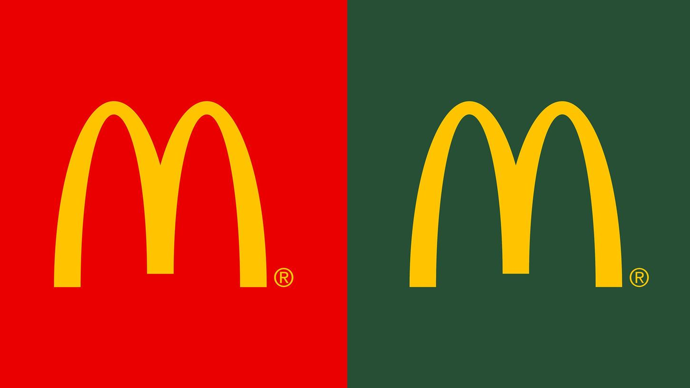
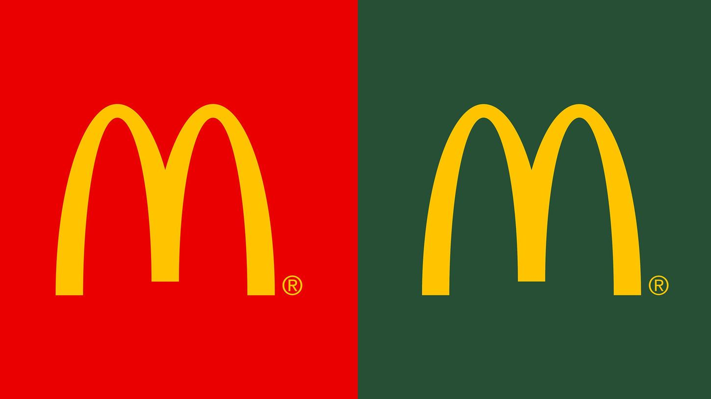

Arten von Werbung
Was ist das Ziel einer Werbekampange?
Image-Kampagne:
Hier möchte sich eine Marke über neue Werte positionieren und somit ihr Image ändern

Beispiel: McDonald's ändert sein Logo mit Symbolcharakter von Rot in Grün. (Gerhard Hegmann.: In "stern", Seite "McDonald's wird grün". Veröffentlicht am 23.11.2009. Abgerufen am 15.11.2021)
- Der Farbwechsel sei auch als Bekenntnis und Respekt vor der Umwelt zu werten.

Beispiel: McDonald's ändert sein Logo mit Symbolcharakter von Rot in Grün. (Gerhard Hegmann.: In "stern", Seite "McDonald's wird grün". Veröffentlicht am 23.11.2009. Abgerufen am 15.11.2021)
- Der Farbwechsel sei auch als Bekenntnis und Respekt vor der Umwelt zu werten.
Abverkaufs Kampagne:
Sie hat die Umsatzsteigerung als Ziel. Typische Ausprägungen sind saisonale Kampagnen (etwa zu Weihnachten), Jubiläums-Angebote oder Aktionswochen.
Klassische Werbekampagne:
- Kombination unterschiedlicher Werbemittel (Media-Mix)
Marlboro – Der Marlboro-Mann.
 Nike – Just do it!
Nike – Just do it!
Old Spice: Der Mann, nach dem Ihr Mann riechen könnte.
Marlboro – Der Marlboro-Mann.
Old Spice: Der Mann, nach dem Ihr Mann riechen könnte.